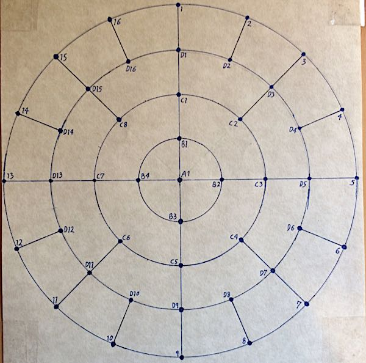
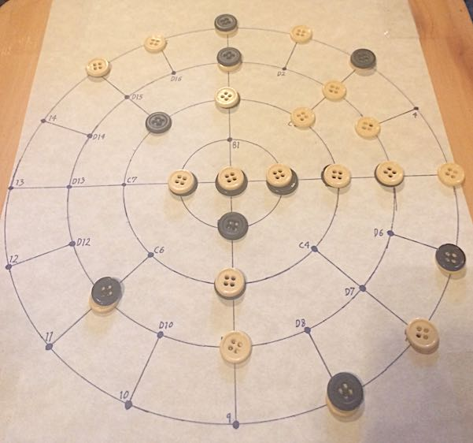

Invented by Christopher St. Clair
Spokes is a game of interactions for 2 or 4 players. Two colored sets of stones, one set black, one white. Same colored stones push each other apart, opposite colored stones pull each other together.
Your goal is to push stones onto your outer home spokes while stopping your opponents from doing so.
The Board: The Spokes board is composed of a center point (called a node) surrounded by 4 concentric circles surrounding it.
Radiating from the center point are 4 evenly spaced lines (called spokes) drawn from the center point to the outer circle.
At every intersection of a line and a circle, a node is drawn.
The nodes are labelled as such, starting on the North (up-pointing) spoke and continuing clockwise around their respective circles:
The Pieces: The playing pieces are 44 white and 44 black flat stones, shaped so they can be stacked.
Pen and Paper: Each player will need a pen and paper on which to record their moves.
For 2 player games, players choose 8 nodes on the Home Circle (these are their Home Nodes). Player 1 has Home Nodes 1-8, and Player 2 has Home Nodes 9-16.
For 4 player games, players choose 4 nodes on the Home Circle. Player 1 has Home Nodes 1-4, Player 2 has Home Nodes 5-8, Player 3 has Home Nodes 9-12, and player 4 has Home Nodes 13-16.
Players should sit in front of their set of Home Nodes around the board.
Their are two phases to each turn: Placement Phase and Resolution Phase.
During the next turn, players again record and place their stones simultaneously.
Player 2 then resolves all interactions.
If it is a 4 player game, Players 3 and 4 take their turns resolving all interactions subsequently.
During the Resolution Phase, when two charged stones are adjacent to each other, they interact depending on their color.
The current player may resolve these interactions in whatever order they wish.
If they are both of the same color (both white or both black), they push each other apart.
If the two adjacent stones are of opposite color (one white and one black), they attract each other.
A block is two stones of opposite color occupying the same node.
A block counts as a neutral stone. It cannot push or pull other stones, and cannot be pushed or pulled by them. It remains stationary on its node until the end of the game, effectively "blocking" the node. It is possible for 2 players to instantly create a block during the Placement Phase if they each choose to place opposing colored stones on the same node.
If two players place the same colored stone on the same node, this creates a double. During the Resolution Phase, all doubles must be resolved first by moving the top stone of the double to an adjacent, empty node or to an adjacent single stone of the opposite color, creating a block. If the double is surrounded by blocks and single stones of the same color, move the top stone of the double onto an adjacent single stone and attempt to resolve the double onto an empty node or single stone of the opposite color again. Repeat until all doubles are resolved. If the double is surrounded by blocks, it cannot be resolved and is left where it is. The Resolution Phase then continues as normal.
In 4 player games, it is possible to have 3 or 4 stones placed on the same node. If any are of opposite color, they instantly create a block. In the case of 2 black and 2 white, 2 blocks are created, one block must be moved to an adjacent empty node if possible. If not, it must be moved onto an adjacent single stone and then that stone must be resolved as if it were part of a double. All such doubles, triples, or quadruples must be resolved to single stones or to blocks before any other interactions are resolved. If they cannot because they are surrounded by blocks, leave them and continue play.The game ends when one of the following occurs:
When all players but one resign, the last player wins. For all other endgame scenarios, each player counts the total number of stones on their Home Nodes (blocks count as two stones for this purpose), and the player with the most stones wins.
This means that the game could end because one player filled all of his Home Nodes with at least one stone, but another player wins because he had more blocks (worth 2 stones each) on his Home Nodes.
If there is a tie, the player with the most stones on their home semicircle (for 2 player games) or quadrant (for 4 player games) wins. This prevents someone from simply blocking all other players to try to win. If they do this and do not try to score on their own Home Spokes, they will lose.
For 2 player games, Player 1's semicircle is B1-B2, C1-C4, and D1-D8. Player 2's semicircle is the remaining nodes. If there is still a tie, Player 2 wins as he moved 2nd in the first round.
For 4 player games, Player 1's quadrant is B1, C1-C2, and D1-D4.
The other three quadrants are similarly numbered. If there is still a tie, the tied player who moved last in the first round wins.
Node A1 does not count as anyone's home territory.2 vs 2: 4 players can also play 2 vs 2. In this form of gameplay, Players 1 and 2 have the joint Home Nodes of 1-8, and Players 3 and 4 have the joint Home Nodes of 9-16. The players on the same teams otherwise play normally, but players on the same team can discuss and collaborate on their planned placements before recording the placement of their stones.
Otherwise, play proceeds exactly like a standard 4 player game.
The team with the most stones on their joint Home Nodes at the end of the game wins.

Above is the Spokes board.

Above is a trial game played on 5/11/17, Player 1 played by me, Player 2 playing randomly generated moves. Note the unbreakable loop created in quadrant 1. This ended the game and the 5 white stones in the loop were removed before scoring. Player 1 won 11 to 2.